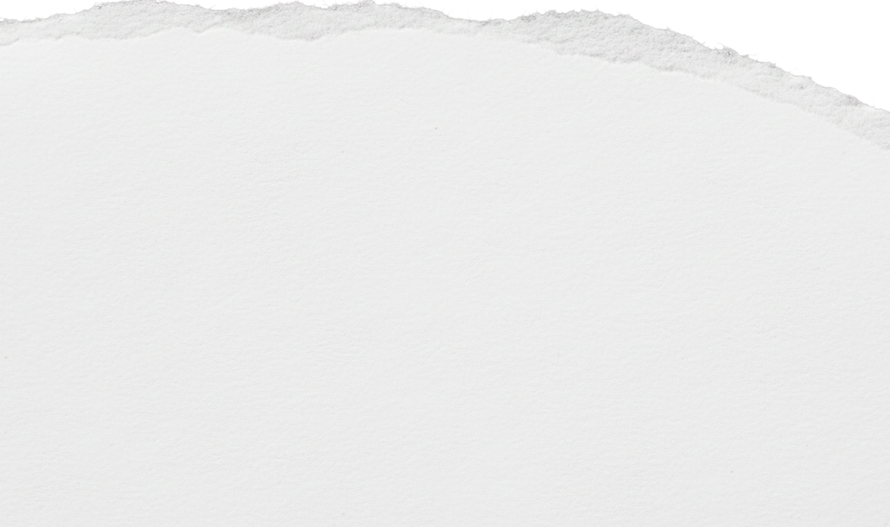

Histoire
Création et mission
Les Lieux de Vie & d'Accueil (LVA), reconnus par la loi du 2 janvier 2002, sont une réponse humaine et familiale. Des adultes permanents partagent le quotidien des enfants dans un cadre stable, chaleureux et individualisé.
La Maison de Redaowsa s'inscrit dans cette démarche : accueillir les enfants que personne n'accueille, sans condition, avec bienveillance et professionnalisme.

à Propos
Contexte et objectif
Un LVA fonctionne comme une grande famille, encadrée par des professionnels formés et des permanents de vie présents au quotidien.


Les étapes
-
Orientation par l'ASE ou le juge
L'enfant est confié suite à une décision du juge des enfants ou du Président du Conseil Départemental. Un dossier est transmis à l'équipe.
-
Accueil & évaluation
Dès l'arrivée, l'enfant est accueilli par les permanents dans un cadre chaleureux. Une période d'observation permet de comprendre ses besoins spécifiques.
-
Projet de vie individualisé
Un projet personnalisé est élaboré avec l'enfant, l'ASE et les partenaires (école, santé, psy). Il est révisé régulièrement.
-
Vie quotidienne encadrée
Les permanents partagent le quotidien : repas, devoirs, activités, sorties. L'accent est mis sur la stabilité des repères et la reconstruction de confiance.
-
Préparation à l'autonomie
À l'approche de la majorité, des actions concrètes accompagnent vers l'autonomie : formation, logement, emploi via le Contrat Jeune Majeur.
Besoins
Fonctionnement et attentes
Ce dont les enfants ont besoin
-
Un hébergement stable et durable
Pas une solution provisoire, un vrai chez-soi
-
Des adultes référents permanents
Les mêmes visages, au quotidien
-
Une routine structurante
Repas, école, activités — des journées prévisibles
-
Un suivi émotionnel bienveillant
Écoute, présence, sécurité affective
-
Une scolarité accompagnée
Aide aux devoirs, suivi scolaire, valorisation
La Maison de Redaowsa s'inscrit dans cette démarche : accueillir.
Ce que nous attendons
-
Collaboration avec l'ASE et les familles
Un travail en lien avec les acteurs existants
-
Respect du cadre légal et des projets
Chaque enfant a un projet personnalisé formalisé
-
Transparence et communication régulière
Bilans, échanges, signalements si nécessaire
-
Engagement dans la durée
Pas d'accueil à court terme sans plan de sortie
-
Respect du rythme de l'enfant
Chaque intégration se fait progressivement
La Maison de Redaowsa s'inscrit dans cette démarche : accueillir.
À propos
Fatouma Abdoulkader
Fondatrice & Permanente — La Maison de Redaowsa
« Ces enfants n'ont pas choisi leur histoire. Notre rôle est de leur offrir un présent stable et un avenir possible. »
